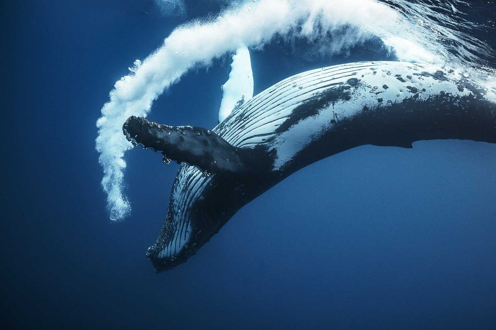

Породы китов
Самые большие киты
Традиционные взгляды на эволюцию китообразных состояли в том, что их ближайшими родственниками и, вероятно, предками являлись мезонихии — вымерший отряд хищных копытных, которые напоминали волков с копытцами вместо когтей и были сестринской группой парнокопытных. Эти животные имели зубы необычной конической формы, похожие на зубы китообразных. В частности из-за этого учёные долгое время считали, что китообразные произошли от некой предковой мезонихии.
В 1985 году Винсент Шарич провёл молекулярно-генетическое исследование белков крови, результаты которого свидетельствовали, что китообразные — близкие родственники парнокопытных, в частности гиппопотамов. В 2005 году палеонтолог Жан-Рено Буассери и его коллеги Мишель Брюне и Фабрис Лихоро провели анализ новых и ранее существовавших окаменелостей бегемотов, китов и антракотериевых и убедительно доказали их близкое родство[1]. На основе этих данных предлагается даже включать китообразных в состав отряда парнокопытные и предлагается название Cetartiodactyla для монофилетического таксона, включающего две эти группы. Однако наибольший возраст известных ископаемых остатков антракотериев, предков бегемотов, на несколько миллионов лет меньше, чем возраст пакицета, наиболее древнего из известных предков китов.